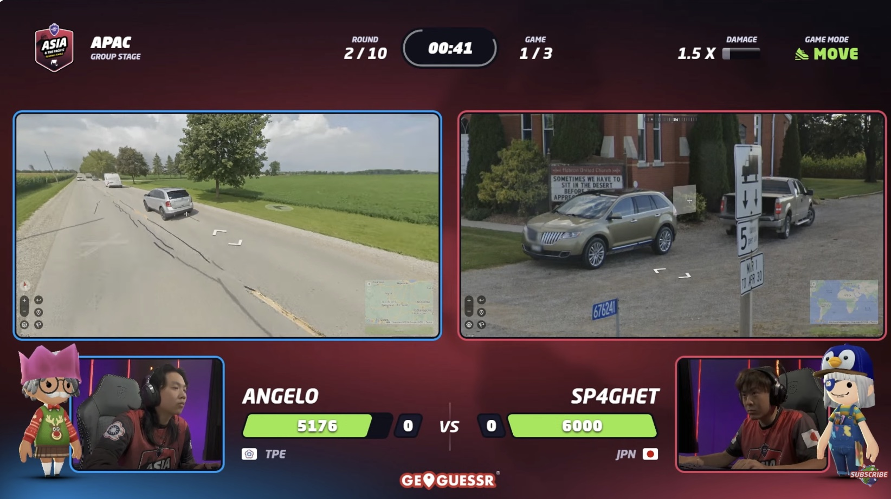

为什么看街景猜地点就这么好玩
Updated in Dec 4th, 2024:
Useful Links
GeoGuessr这个游戏出现于2013年，开发于斯德哥尔摩，但我第一次接触它的时候已经是2021年左右了。它的玩法可以用一句话概括：根据Google地图街景，在地图上点出街景对应的地点。
这个玩法有一些变体，主要有三种模式：
- Move: 这个模式中你也可以在其中移动，就像你可以在Google地图街景中做的那样。
- No Move: 这个模式中你只能站在一个点上，你可以四处旋转看看前后左右上下的样子，也可以放大缩小。
- NMPZ(No Move, Pan, or Zoom): 比上一个模式更困难，这个模式中你眼前的只有一张静态的图片，你无法对这张图片放大缩小（zoom）。
因为这个游戏的运行实际上就是一个web application调用一些Google Map的API，因此只需要一个浏览器就可以玩。但2024年的当下，你需要订阅才可以玩，一年的订阅费大概是200人民币左右, 但你也可以按月订阅。尽管如此，这是我今年最值得的消费之一。

这个游戏好玩在哪儿？
如果要让我举出玩这个游戏最开心的瞬间，无疑是那些在2分钟之内从世界地图上精确地猜出眼前街景所处的地点（不超过10米）的时候。你需要综合一切你对世界各个国家的认知，以及对Google地图街景本身的认知。你会意识到，人类的模式识别能力是何等强大。
顶尖高手可以在几十秒的时间之内看着某条荒无人烟的高速公路，然后根据道路的方向，公路的粉刷风格，周围植物的样貌，Google街景的图像风格，在地图上找到某个位于俄罗斯的精确的点。
这真的可能吗？但事实上通过一些练习和记忆，很快你就能达到震撼周围的人的境地。而这个练习和记忆的过程本身就非常有趣，比如世界各国的公路长什么样子，世界各个国家说什么语言，各种语言长什么样子，各个国家的建筑大概是什么风格？很快你就会知道墨西哥城有粉色的出租车，南非和悉尼有紫色的蓝花楹(Jacaranda)，以及罗马尼亚的电线杆长什么样子。这会让你的游戏过程就像破解悬案。如果你喜欢看柯南，听悬案类podcast，那你也会喜欢玩这个游戏。
更不用说瑞典人优秀的审美让这个游戏的avatar也非常可爱，如果喜欢的话，你完全可以把这个游戏当作奇迹暖暖玩，打扮你的人物形象。
高手可以达到什么水平
尽管你可以看到像Rainbolt这样的顶尖玩家在视频中展示只看0.1秒街景就能在地图上点出相近的地点，但需要注意这有剪辑的成分，有时候他们也会做出一些离谱的猜测。但你大致可以感受到人类的极限远比我们想象的要高。
别把网页游戏不当电子竞技。2023年开始，这个游戏开始举办世界杯，来自尼德兰的Consus最终打败众多高手拿到冠军。这个游戏的竞技模式是1对1玩我上面说的三种游戏模式，如果你的猜测离真实的点更近，那你就会对对方造成一定伤害，直到在多轮比赛中消耗对方所有的血量。但简单来说，我们需要做的，就是在地图上点出街景的拍摄地点，越近越好。

如何入门和提高
判断国家
最开始很有可能你能猜到一些世界知名地点，比如在地图上点出埃菲尔铁塔，自由女神像这样的地点。
更进一步，在简单的地图上，你往往会被给到城市的街景。城市中有大量的信息，你可以通过语言来判断你身处何处，所以了解各种语言长什么样子非常重要。有时候你会在街上的广告上找到一个网址，比如一个www.example.nl网址告诉你，你有很大概率身处尼德兰，因为nl是🇳🇱的顶级域名。
接下来你可能可以通过住宅的风格判断出你此时处于某个巴尔干地区国家；通过高耸的山峦判断你处于挪威而不是瑞典；根据西班牙语国家路面上的黄色车牌判断你处于哥伦比亚。等等不一而足。
但顶级选手还会对Google Map本身进行研究，比如吉尔吉斯斯坦，加纳，多米尼加这样的国家进行街景拍摄的车和其他的地方有显著的不同；比如拍摄在保加利亚的街景往往都是冬天，所以看起来都非常阴沉。
判断城市/地区
当你开始更进一步想要猜到具体的城市或者地区的时候，往往你已经充分找到了这个游戏的乐趣。这也是我现在正在突破的地方，你需要对各种国家一个一个进行研究。
以荷兰为例，如果你的周围都是现代建筑，那你大概处在鹿特丹，因为该城市在二战中被夷为平地，建筑都是新建的； 或者如果你看到一个显然是北美的地方，但是周围都是法语，那你很可能在Montreal或者Quebec City；或者你身处日本但发现交通灯的方向是竖着的，那你大概率处在北海道。
但面积广袤，特别是横跨的经度特别大的国家，像俄罗斯，美国，印度尼西亚，是非常难猜的。判断自己究竟能够到达哪个地步然后move on也是非常重要的。